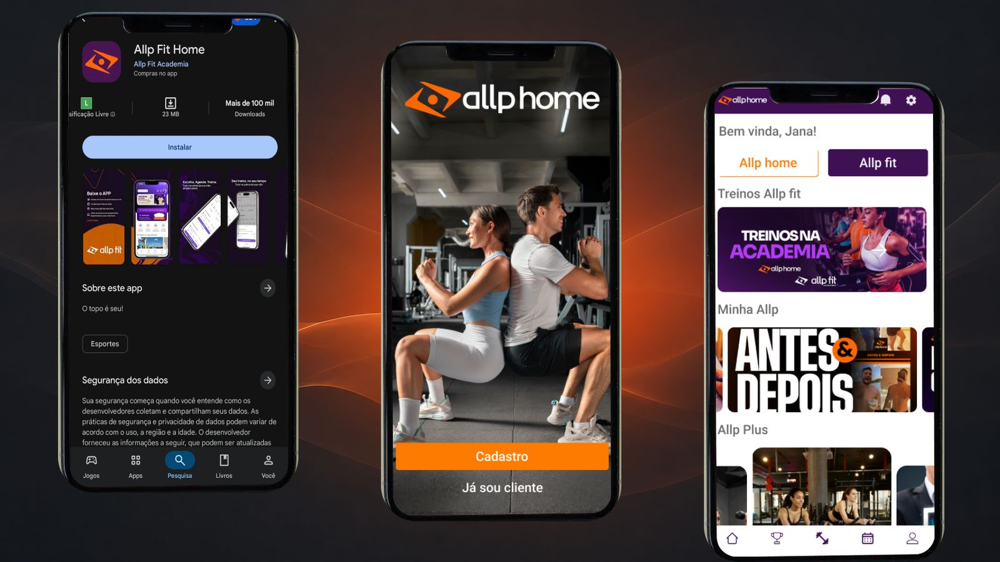
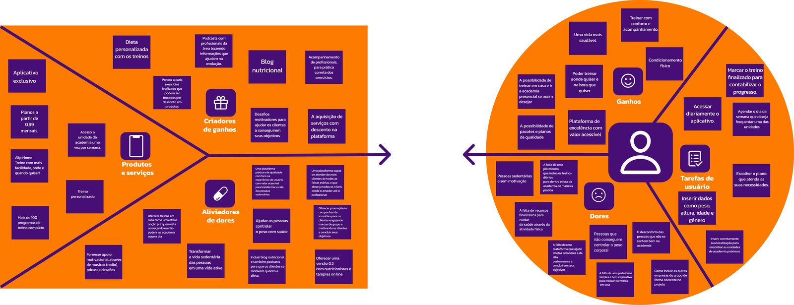
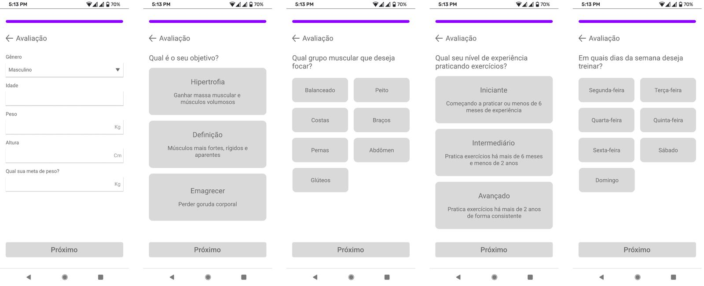
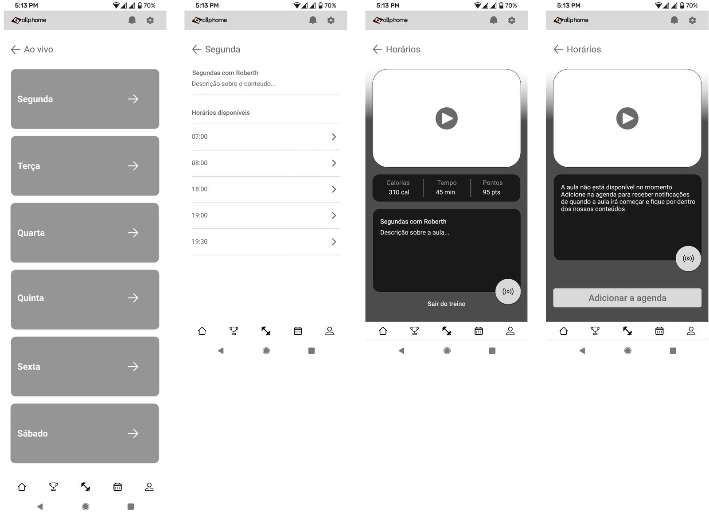
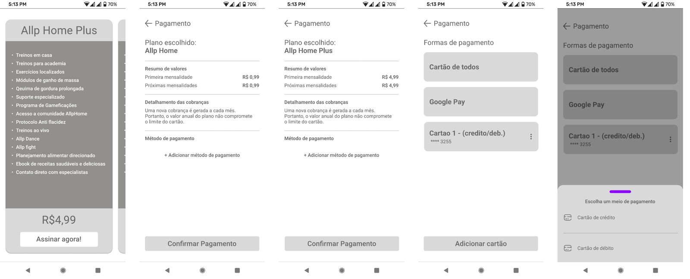
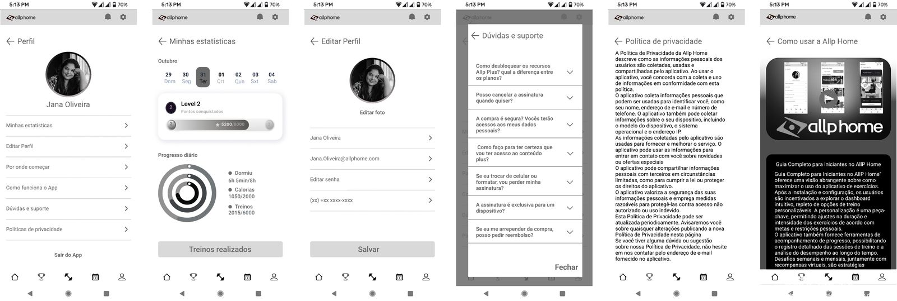
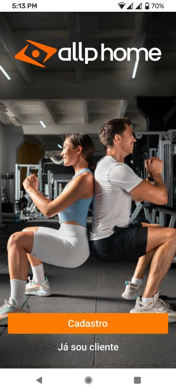
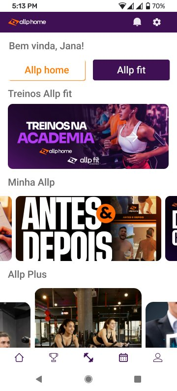

Jana, 27 anos
Iniciante e sedentária
Rotina exaustiva, orçamento apertado e receio do ambiente de academia. Precisa de acolhimento, preço possível e flexibilidade.
Allp Fit Academia · app Allp Fit Home
Pesquisa, proposta de valor e arquitetura de um app de saúde para quem tem pouco tempo e pouco dinheiro. O app publicado na Google Play segue a estrutura e os fluxos deste projeto.

Downloads e nota: página do app na Google Play, consultada em 25/05/2026.
O desafio
A Allp Fit é uma rede de academias que queria chegar à classe C com um app próprio. O problema de negócio era claro: muita gente começa a treinar em casa e desiste em poucas semanas, por falta de tempo, de dinheiro ou de motivação.
O app precisava resolver isso e ainda servir ao negócio: atrair alunos para as unidades físicas, apresentar a franquia para novos investidores e abrir espaço para outros serviços do grupo no futuro.
O cronograma do cliente previa de 8 a 10 meses. Entregamos a pesquisa, a estratégia, a arquitetura e os fluxos em 4 meses, quando o contrato foi encerrado.
Visão de negócio
Nas entrevistas com o CEO, o app deixou de ser só um catálogo de treinos e virou a porta de entrada de um ecossistema de saúde acessível. Cada decisão de tela partiu destas quatro metas.
Treinos em casa por R$ 0,99 ao mês, com uma visita por semana à unidade física. O preço tira a principal barreira de quem nunca pagou academia.
O app também apresenta o negócio para quem quer abrir uma unidade, apoiando a meta de expansão nacional da rede.
Estrutura de super app, preparada para receber outros serviços do grupo, como energia limpa e odontologia, sem refazer a navegação.
Pouca informação por tela e uma curva de aprendizado curta, seguindo a norma de usabilidade ISO 9241-11.
Pesquisa
Juntamos pesquisa de mercado, entrevistas com a liderança e uma pesquisa quantitativa com o público-alvo, em sua maioria entre 26 e 42 anos.
Iniciante e sedentária
Rotina exaustiva, orçamento apertado e receio do ambiente de academia. Precisa de acolhimento, preço possível e flexibilidade.
Intermediário e sem tempo
Já treina, mas o trabalho quebra a constância e falta informação confiável sobre alimentação. Precisa de treino personalizado e de motivo para voltar.
O Allp Fit Home une os dois mundos: treino digital por R$ 0,99 e uma visita por semana à academia, uma transição suave do sedentarismo para a vida ativa.
Proposta de valor
O canvas de proposta de valor cruzou as tarefas, as dores e os ganhos das personas com o que a Allp Fit podia oferecer. Dele saíram as promessas do app.

Mais de 100 programas para fazer em casa, no horário que couber na rotina.
O plano digital dá acesso à unidade física, para quem quer o apoio de um professor.
Objetivo, nível e dias de treino definidos na primeira avaliação.
Cada treino soma pontos, trocados por descontos em produtos e serviços.
Rede social interna e consultoria ao vivo foram cortadas da primeira versão pela matriz de prioridade (MoSCoW). Eram recursos caros de manter e arriscavam a estabilidade da jornada principal, que é treinar.
Arquitetura e fluxos
Uma estrutura rasa, em que qualquer função principal fica a até três níveis de distância. O mapa do app, a jornada de cadastro e o ciclo de treino foram desenhados antes de qualquer tela.
As perguntas de saúde vêm depois do pagamento. Assim, o formulário longo não afasta seu cliente antes da compra.
Uma avaliação rápida no fim de cada treino dá ao negócio uma medida constante de satisfação e dá ao aluno a sensação de vitória.
"Para secar", "Ganho de massa", "Allp 40+": categorias na língua de quem está começando, no lugar de grupos musculares.
Pagamentos, configurações e dúvidas ficam no Perfil. A Home é só para descobrir e treinar.
As perguntas frequentes aparecem antes do chat com uma pessoa, o que reduz o custo de atendimento.
Cancelar o plano ou uma aula pede confirmação. Evita erros e abre espaço para uma oferta de retenção.
Wireframes
Protótipos de baixa fidelidade seguindo os padrões do Android e do iOS, para seu cliente não precisar aprender a usar o app.




O app publicado
Com o contrato encerrado, o visual final e o desenvolvimento ficaram com outra empresa. O app chegou à Google Play no fim de 2023 com a espinha dorsal deste projeto.
A entrada com "Cadastro" e "Já sou cliente", as abas Allp home e Allp fit, os carrosséis por categoria e a barra com início, conquistas, treinos, agenda e perfil vieram dos wireframes e dos fluxos que entregamos.


Resultado
Mais de 100 mil downloads e nota 4,7 em 3 mil avaliações mostram que a pesquisa, o modelo físico e digital e as jornadas desenhadas funcionaram com o público real.
Organizar muitos dados de saúde sem assustar quem está começando. Dividir a avaliação em passos resolveu o atrito e ainda deixou os dados mais limpos para o negócio.
O design não termina no Figma. Uma entrega bem documentada é o que permite a outra equipe continuar o trabalho sem perder as decisões, como aconteceu aqui.
Com mais tempo, testaríamos contraste e legibilidade com pessoas mais velhas, em situações reais, como uma academia bem iluminada.
Projeto conduzido por Gabriel Barros como Lead Product Designer na VM Pereira Design, com Vanessa e Diego na pesquisa e nas personas. A arquitetura de informação, os fluxos e os wireframes são de Gabriel Barros. O visual final e o desenvolvimento do app foram feitos por outra empresa.
Conte sobre o seu app, site ou loja. Começamos pelo negócio e pelo seu cliente.
Iniciar um projeto